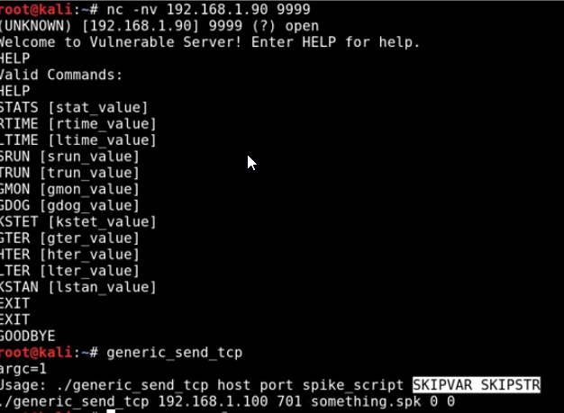

Spiking
is done to figure out what is vulnerable.

script:
-- connects to the server
-- generic_send_tcp -using this to send shellcode
> generic_send_tcp {host IP} {port} stats.spk 0 0
Trun script -